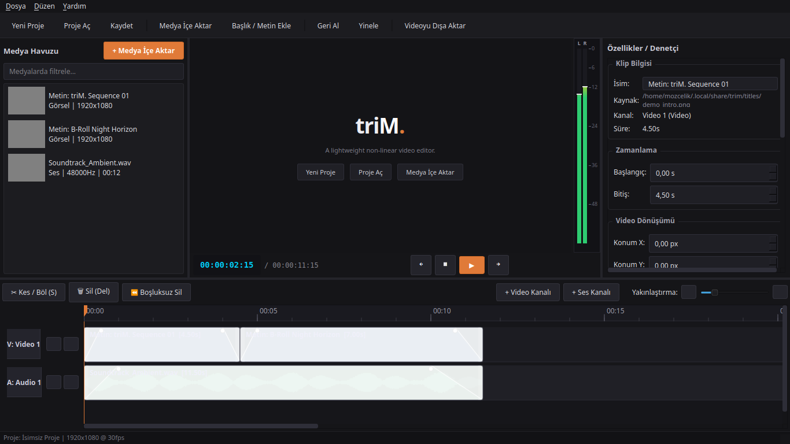

Multi-Track Timeline
AvailableIndependent video and audio tracks with magnetic frame snapping, razor cuts (S), and ripple deletion (Shift+Delete).
A lightweight, native non-linear video editor for Linux.
A streamlined creative desktop experience focused on cutting, trimming, timeline sequencing, and audio synchronization. Built with Python, Qt6, FFmpeg, and PyAV — without cloud lock-in or Electron memory bloat.
$git clone https://github.com/MOzcelik14/triM.git && cd triM && ./install.sh

Essential non-linear editing capabilities focused purely on cutting, arranging, and exporting video without visual clutter.
Independent video and audio tracks with magnetic frame snapping, razor cuts (S), and ripple deletion (Shift+Delete).
Accurate sequential demuxing with PyAV and ffmpeg libav, zero-crackling audio buffer queue, and exact real-time playback.
Multi-threaded peak extraction, persistent caching, and dual-channel dynamic RMS dBFS meters with peak hold.
Direct clip-level draggable opacity curves, audio gain ramps, and smooth Dip to Black / Dip to White transitions.
Native title, subtitle, and lower-third generation with system font selection, alignment flags, and alpha transparency.
Live brightness, contrast, and saturation controls, instant black-and-white conversion, and position/scale transforms.
Preset-driven resolution and framerate exports, multi-threaded filtergraph execution, and non-blocking background queue.
Periodic background state snapshots ensuring immediate one-click project recovery in the event of power or system failure.
AppStream metadata and Flatpak sandbox packaging for one-click installation via Flathub.
triM. rejects heavy web wrappers. It connects directly to Linux display servers via Qt6 and Wayland.
Complies with FreeDesktop standards including scalable hicolor icon hierarchy, MIME association for .trim and legacy .cutline files, Wayland fractional scaling, and AppStream cataloging.
Download the prebuilt .deb package directly for Ubuntu, Debian, Linux Mint, Pop!_OS and derivatives, or install seamlessly using the automated desktop script.
# 1. Download trim_0.2.0_all.deb from GitHub Releases
wget https://github.com/MOzcelik14/triM/releases/download/v0.2.0/trim_0.2.0_all.deb
# 2. Install with apt (automatically handles dependencies)
sudo apt install ./trim_0.2.0_all.deb
# 3. Launch from application menu or terminal
trim# Clone and run automated desktop installer
git clone https://github.com/MOzcelik14/triM.git
cd triM
./install.sh
# Installs icons, desktop shortcuts, ~/.local/bin/trim, and environment# Developer virtual environment setup
git clone https://github.com/MOzcelik14/triM.git
cd triM
python3 -m venv .venv
source .venv/bin/activate
pip install -r requirements.txt
pip install -e .
trimTransparent roadmap showing current verified capabilities and planned architecture milestones.
triM. is built openly under the permissive MIT license. Independent, hackable, and welcoming to contributors.